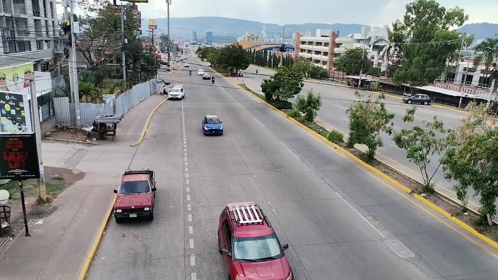
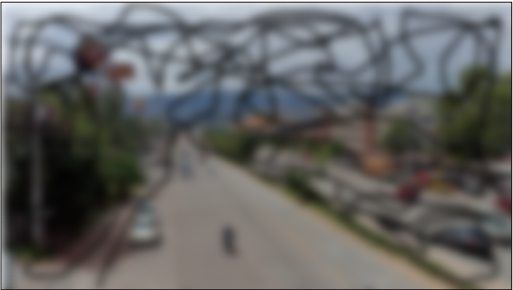
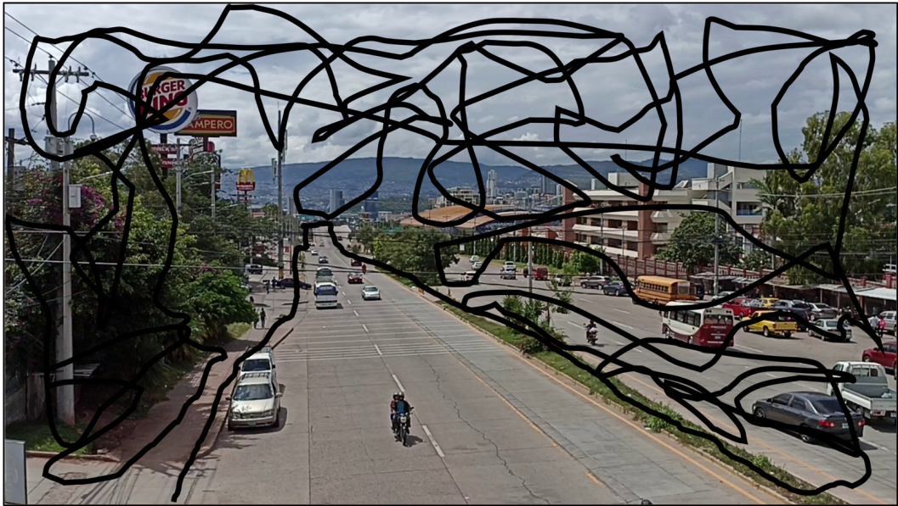
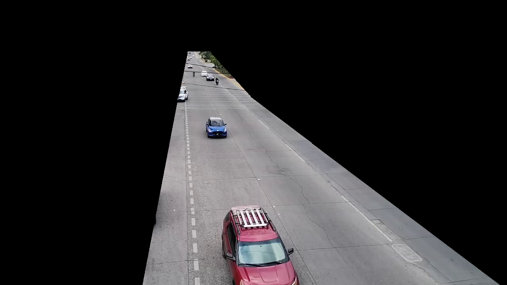

Resultados obtenidos durante la etapa de preprocesamiento de las imágenes utilizadas en esta investigación. Estas operaciones permiten mejorar la calidad de la información antes de las etapas de detección y seguimiento de vehículos.

Fotograma extraído directamente del video utilizado como entrada del sistema.

Aplicación del filtro Gaussiano para suavizar la imagen y reducir pequeñas variaciones producidas por el ruido.

Resultado intermedio obtenido durante el proceso de segmentación para mejorar la calidad de la máscara.
Máscara binaria final utilizada para aislar la región de interés del video.

Imágen de entrada directa hacia la CNN.